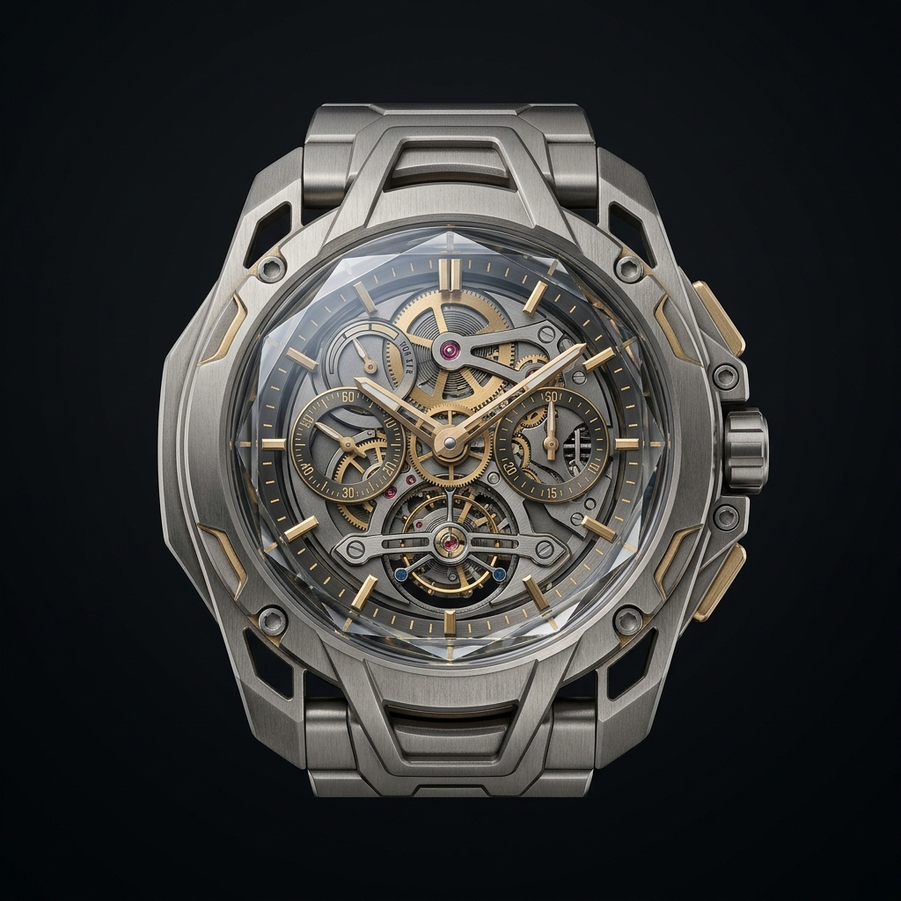
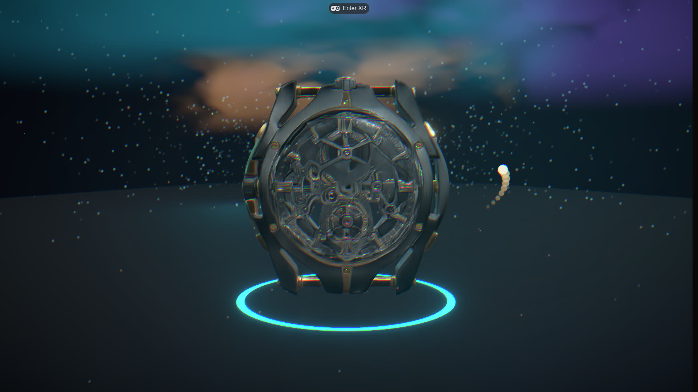
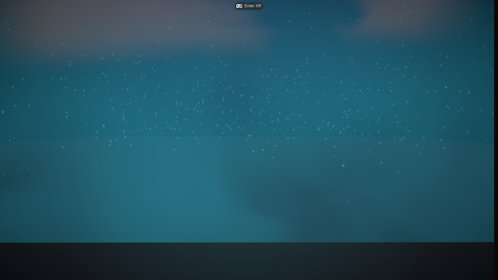
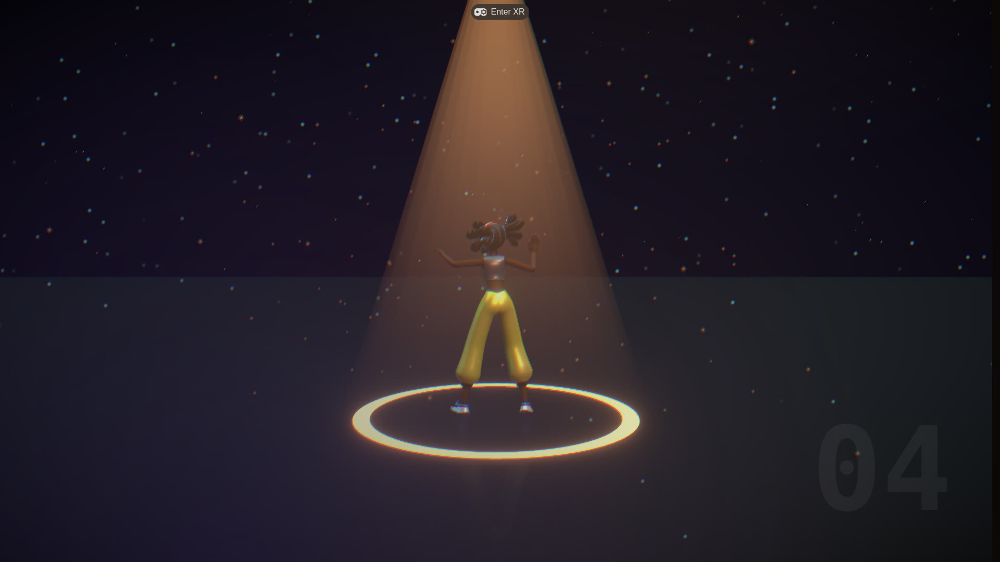

React Three Fiber · WebXR · one route
Fourmovements.
Onescroll.

01 · concept — fal-ai/nano-banana-2
→
image→3D
draco + webp
draco + webp

02 · in the scene — auto-normalized, ~1 MB
$ npm run generate:flagship -- --apply
captured from the live route — not a mockup

02 · Scroll
Chaptersmaterialize
onarrival.
IThe Object
IIThe World
IIIThe Field
IVThe Figure

Itdances
outof
thebox.
03 · Ship
Themotionis
theconstant.
Thelook
isyours.
github.com/MustBeSimo/cinematic-scroll-skill